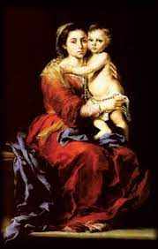
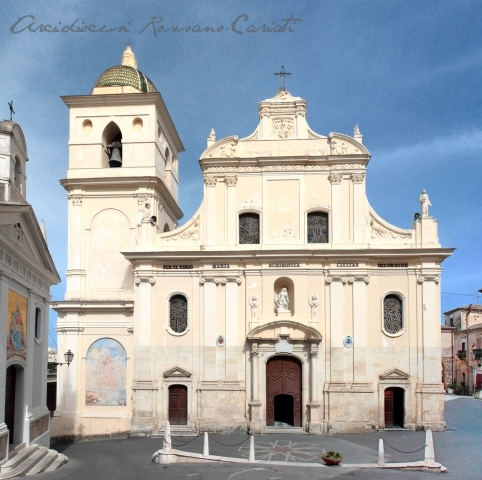
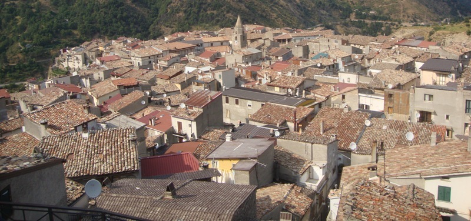

HISTÓRIA DA DEVOÇÃO
O MILAGRE
 É tradição enraizada na Itália, que
aproximadamente no ano 580, o Capitão Maurício (como era conhecido), numa expedição
marítima com seus homens na embarcação, enfrentou uma terrível tempestade no Mar
Mediterrâneo. Nervoso e preocupado com aquela situação, homem religioso praticante,
decidiu apelar para a MÃE DE DEUS. E assim, gritando com o Terço na mão, suplicava
o socorro de NOSSA SENHORA. No auge dos seus sofrimentos prometeu que, se fosse salvo
com sua tripulação, teria o maior prazer de construir um belo Santuário em agradecimento
a tão preciosa e eficaz proteção materna da SANTÍSSIMA VIRGEM MARIA, junto a DEUS
NOSSO SENHOR.
É tradição enraizada na Itália, que
aproximadamente no ano 580, o Capitão Maurício (como era conhecido), numa expedição
marítima com seus homens na embarcação, enfrentou uma terrível tempestade no Mar
Mediterrâneo. Nervoso e preocupado com aquela situação, homem religioso praticante,
decidiu apelar para a MÃE DE DEUS. E assim, gritando com o Terço na mão, suplicava
o socorro de NOSSA SENHORA. No auge dos seus sofrimentos prometeu que, se fosse salvo
com sua tripulação, teria o maior prazer de construir um belo Santuário em agradecimento
a tão preciosa e eficaz proteção materna da SANTÍSSIMA VIRGEM MARIA, junto a DEUS
NOSSO SENHOR.
E de fato a
embarcação atracou segura e firme no porto, sem qualquer outra dificuldade,
sendo ele preservado do eminente perigo de morte com seus marujos. Feliz e
satisfeito, logo se movimentou para cumprir a promessa, tratando de arregimentar
o pessoal e o Mestre para a construção do templo religioso em homenagem a VIRGEM
MARIA e ao SENHOR DEUS, na cidade de Rossano Cálabro, na Calábria, Itália.
As Obras começaram e em poucos meses
o Templo se delineou na paisagem local, trazendo alegria ao povo e ao clero. Concluída
a construção, imediatamente iniciaram o acabamento, com a realização das pinturas,
assim como, com a colocação das imagens, moveis e bancos de madeira para uso dos
fiéis.
Todavia, algo insólito aconteceu
com a pintura da imagem de NOSSA SENHORA, que estava sendo pintada numa das paredes,
por um artista famoso, que foi contratado e veio de Florença para realizá-la. O
trabalho do pintor que ia sendo realizado dia a dia com capricho e beleza, além
de todos os cuidados, no dia seguinte misteriosamente a imagem desaparecia;
simplesmente sumia da parede sem deixar qualquer mancha de tinta.
Esse fato aconteceu durante dois dias. Todos ficaram intrigados e pensavam:
"Alguém está desmanchando
o trabalho do pintor e atrasando a inauguração do Santuário!" Por outro lado, o artista contratado ficou aborrecido com
o acontecimento, porque estava perdendo o seu tempo e ninguém conseguia imaginar
uma providência eficaz para apurar o que estava acontecendo, e corrigir o problema.
Bastante contrariado, não queria recomeçar a pintura outra vez. Então o encarregado
da obra, numa tentativa para solucionar o caso, decidiu e colocou um vigia, com a
determinação de não permitir que ninguém entrasse no Templo, até que o Santuário
estivesse totalmente concluído e inaugurado.
No dia seguinte, começando anoitecer,
uma bela e distinta senhora trazendo nos braços um lindo e sorridente garotinho,
pediu ao vigia licença para entrar, pois desejava rezar diante de uma linda imagem
de JESUS que estava colocada no altar.
O rapaz-vigia havia recebido a ordem
de não permitir a entrada de ninguém na Igreja. Aquele era o seu serviço...
Então uma grande dúvida envolveu o seu coração... Sim, porque diante dele, estava
uma senhora perfeitamente distinta, que fez o pedido com extrema delicadeza e
educação, e desejava somente rezar um pouco; e em seus braços a senhora trazia uma
criança forte e muito bonitinha, revelando que se tratava de uma mulher de boa família.
Pensativo, abaixou a cabeça, e depois olhando com mais atenção para a mulher
perguntou: “A senhora deseja
apenas rezar, não é verdade?” A visitante
respondeu: “Sim senhor,
por favor.”
Embora ainda com alguma dúvida,
olhou para os lados, não havia mais ninguém. Minuciosamente olhou mais uma vez para
a mulher e a criança, e
cuidadosamente a examinou com o olhar. Verdadeiramente se
convenceu, de que não existia nada de anormal ou de estranho com aquela mulher.
Ao contrário, suas palavras eram agradáveis e respeitosas. Ele então permitiu
que ela entrasse na Igreja para rezar.
Acontece que o tempo passava
ligeiro e a mulher e o filho não voltavam. Depois de meia hora, ele começou
a ficar preocupado, estranhando aquela demora excessiva! E por isso
mesmo, resolveu entrar no Templo para ver onde ela estava. E caminhando em
direção ao Altar, teve uma surpresa admirável: olhando na parede do lado
esquerdo, viu aquele lindo painel: “Aquela mesma Mulher e o Menino que entraram na Igreja para rezar,
estavam ali desenhados com absoluta perfeição na parede ao lado do Altar! Era NOSSA
SENHORA e o MENINO JESUS”.
Entre o susto e uma admirável
alegria, correu em direção à porta de entrada da Igreja repleto de emoção, e quis
anunciar a plenos pulmões o fato ocorrido, a todas as pessoas que passavam por ali:
“É NOSSA SENHORA ACHIROPITA!
É NOSSA SENHORA ACHIROPITA!”A palavra
Achiropita num idioma usado na Itália significa (não feito ou não pintado por mãos)
= A + kirós + pita = (não pintado por mãos). Então era um milagre! Uma bela pintura
apresentando NOSSA SENHORA com o MENINO JESUS em seus braços, para alegria de toda
a Comunidade Religiosa. Era mais um nome para a MÃE DE JESUS e uma bela
“Devoção” proporcionada pela
SANTÍSSIMA VIRGEM MARIA e o SENHOR DEUS.
Esta devoção logo se espalhou na Itália
e os emigrantes italianos quando vieram para o Brasil, trouxeram para nós, a bela
imagem da MÃE SANTÍSSIMA no final do século XIX.
SANTUÁRIO DE NOSSA SENHORA
ACHIROPITA e Cidade de "Rossano - Cálabro" (na Itália)



 PRÓXIMA
PÁGINA
PRÓXIMA
PÁGINA
RETORNA
AO ÍNDICE